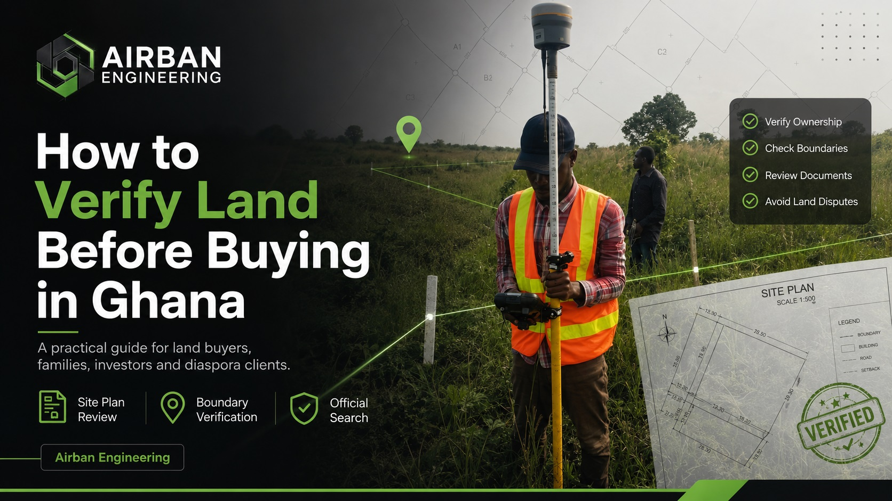

“A seller may sound convincing. A site plan may look official. But before you make payment, you need to verify.”
Buying land in Ghana can be one of the most important investments a person makes. Whether you are buying land to build a home, start a development project, secure family property, or invest for the future, the decision should not be based on trust alone.
A seller may sound convincing. A site may look available. A site plan may look official. The land may even have boundary pillars on the ground.
But before you make payment, you need to verify.
Land verification is not just about checking documents. It is about confirming whether the land being sold matches the documents, whether the boundaries are clear, whether the ownership records are clean, and whether there are any risks that could affect you later.
Land Buyer’s Quick Verification Checklist
Before paying for land in Ghana, make sure you have considered the following checks:
- Request the site plan and land documents
- Confirm the actual location of the land on the ground
- Check whether the site plan matches the land being shown
- Verify the boundary pillars or physical boundary evidence
- Conduct an Official Search at the Lands Commission
- Check for encumbrances, restrictions or conflicting interests
- Observe access, drainage, slope and site conditions
- Get professional advice before making payment
Why Land Verification Matters Before Buying
Many land problems begin because buyers rush into payment before proper checks are done.
Some buyers rely only on the seller’s word. Others accept a site plan without confirming whether it matches the actual land on the ground. Some do not conduct an Official Search at the Lands Commission before making payment.
This can lead to serious problems such as:
- Buying land from the wrong person
- Buying land with unclear ownership
- Buying land with boundary conflicts
- Paying for land that overlaps another person’s property
- Buying land affected by encumbrances or restrictions
- Discovering later that the land cannot be registered easily
- Getting involved in disputes after payment
Step 1: Ask for the Site Plan and Land Documents
The first step is to request the available documents from the seller.
These may include:
- Site plan
- Indenture
- Allocation note
- Previous search report
- Land title certificate where applicable
- Conveyance documents
- Any document showing the seller’s interest in the land
The site plan is especially important because it gives technical information about the land, including its location, shape, dimensions, area, and sometimes survey reference details.
Step 2: Confirm the Location of the Land on the Ground
After receiving the documents, the next question is simple:
“Is the land on the ground the same land shown on the site plan?”
This is where many buyers make mistakes.
A seller may take you to a piece of land and say, “This is the plot.” But unless the site plan is checked against the physical land, you may not know whether the land shown to you is truly the land described in the document.
A professional land surveyor can help verify:
- The approximate location of the land
- Whether the site plan corresponds with the ground position
- Whether the boundaries shown are reasonable
- Whether the land overlaps nearby developments or occupations
- Whether boundary pillars or features on the ground make sense
Step 3: Check the Boundaries Before You Pay
Boundary verification is one of the most important parts of land due diligence.
A plot may look open, but its actual boundaries may not be clear. In some cases, a seller may show a buyer a larger area than what is actually documented. In other cases, part of the land may already be occupied or encroached upon.
Before buying, you should know:
- Where the land starts
- Where the land ends
- Whether the boundary pillars exist
- Whether the pillars match the site plan
- Whether there are signs of encroachment
- Whether nearby owners or developments affect the land
Boundary issues can become very expensive after payment. That is why it is better to verify the boundaries before you buy, not after a dispute begins.
Step 4: Conduct an Official Search at the Lands Commission
An Official Search is one of the most important checks in the land buying process.
The purpose of an Official Search is to help confirm information recorded at the Lands Commission concerning the land or interest being investigated.
An Official Search may help reveal:
- Recorded ownership or interest
- Registration status
- Encumbrances
- Restrictions
- Mortgages
- Caveats
- Conflicting interests
- Other issues affecting the land
If the official search reveals concerns, the buyer should not ignore them. The results should be interpreted carefully before payment is made.
Step 5: Compare the Documents, Ground Evidence and Official Records
Proper land verification is not one single action. It is a combination of checks.
The strongest approach is to compare three things:
1. The Documents
These include the site plan, indenture, title certificate where applicable, allocation note, or any other land document provided by the seller.
2. The Ground Situation
This includes the actual land being shown, boundary pillars, occupation, encroachment, access, nearby developments, and the physical condition of the site.
3. The Official Records
This includes the information obtained from the Lands Commission through an Official Search.
When these three areas support each other, the buyer gains more confidence. When they conflict, the buyer should slow down and seek professional advice.
For example:
- The site plan may show one location, but the seller may show another land on the ground
- The land may look vacant, but official records may show an existing interest
- The seller may claim ownership, but the search may reveal another registered interest
- Boundary pillars may exist, but they may not correspond with the site plan
Step 6: Do Not Ignore Access, Terrain and Site Conditions
Many buyers focus only on ownership and documents, but the physical condition of the land also matters.
Before buying, consider:
- Is there proper access to the land?
- Is the land waterlogged?
- Is the land steep or difficult to develop?
- Is the land close to a drainage path?
- Are there signs of flooding?
- Are there existing structures or occupations nearby?
- Will the land require significant filling or site preparation?
For buyers planning to build, a site visit and professional observation can help reveal practical issues before purchase.
Step 7: Ask for a Professional Recommendation Before Payment
After the checks are completed, the buyer should receive a clear recommendation.
The recommendation may fall into one of three categories:
Proceed
This means the available information does not show major concerns, and the buyer may proceed subject to legal advice and final agreement.
Pause
This means some issues need clarification before payment should be made.
Investigate Further
This means there are concerns that require deeper checks, additional documents, stakeholder confirmation or further professional review.
The goal of verification is not to frighten buyers. The goal is to help buyers make informed decisions.
“Sometimes the best advice is not ‘go ahead’. Sometimes the best advice is ‘pause and check properly’.”
Common Mistakes Land Buyers Should Avoid
Many land buyers in Ghana make avoidable mistakes because they are under pressure to pay quickly.
1. Paying Before Verification
Do not make full payment before checking the land, documents and official records.
2. Relying Only on the Seller’s Word
A seller may be honest, but professional verification is still necessary.
3. Accepting a Site Plan Without Ground Checks
A site plan should be checked against the actual land being shown.
4. Ignoring Boundary Issues
If the boundaries are unclear, verify them before buying.
5. Skipping the Official Search
An Official Search helps reveal important information from land records.
6. Buying Land Without Understanding the Terrain
The land may be difficult to develop due to slope, drainage, flooding, access or other site conditions.
7. Rushing Because the Seller Says Others Are Interested
Pressure is not a reason to skip due diligence. If the land is worth buying, it is worth verifying.
Airban Engineering’s Land Buyer’s Due Diligence Package
Airban Engineering supports prospective land buyers through our Land Buyer’s Due Diligence Package. Depending on the client’s situation, this package may include:
- Site plan review
- Site visit where required
- Boundary verification survey
- Official Search at Lands Commission
- Review of available land documents
- Ground observation
- Summary findings
- Professional recommendations
This package is suitable for first-time land buyers, property investors, diaspora buyers, families purchasing land, clients buying from private sellers, clients buying from family landowners, and buyers who are unsure whether the land is safe to proceed with.
View Our Service PackagesWhat You Should Send Before Requesting a Quote
To help Airban Engineering recommend the right verification process, kindly provide:
- Location of the land
- Size of the land if known
- Existing site plan if available
- Indenture or land documents if available
- Seller details where necessary
- Location pin or site images if available
- Whether you have already paid or you are still negotiating
Final Advice for Land Buyers in Ghana
Buying land is not something to rush.
Before you pay, take time to verify the documents, inspect the land, check the boundaries, conduct an Official Search, and get professional guidance.
A proper verification process can help you avoid costly mistakes and make a more confident decision.
“Survey first. Verify before you buy.”
If you are planning to buy land in Ghana, Airban Engineering can help you check the land, review the documents, verify the boundaries, and guide you on the next steps before you commit money.
Need Help Verifying Land Before You Buy?
Airban Engineering provides professional surveying and geospatial support for land buyers, landowners, developers and property owners in Ghana.
- Land Buyer’s Due Diligence
- Site plan review
- Boundary verification
- Official Search support
- Land documentation guidance